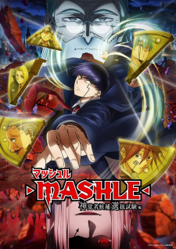

List Anime
 |
 |
 |
 |
Re:Zero kara Hajimeru Isekai Seikatsu 3rd Season Type: TV Episodes: 16 Status: Not yet aired Aired: Oct 2, 2024 to ?Premiered: Fall 2024 Broadcast: Wednesdays at 22:30 (JST) Previewed: Jul 6, 2024 Producers: Magic Capsule, Kadokawa Licensors: None found, add some Studios: White Fox Source: Light novel Genres: Drama, Fantasy, Suspense Themes: Isekai, Psychological, Time Travel Duration: Unknown Rating: R - 17+ (violence & profanity) |
Make Heroine ga Oosugiru! Type: TV Episodes: 12 Status: Currently Airing Aired: Jul 14, 2024 to Sep 29, 2024 Premiered: Summer 2024 Broadcast: Sundays at 00:30 (JST) Producers: Aniplex, Yomiuri Telecasting, Tokyo MX, Good Smile Company, BS11, Contents Seed, INSPION Edge, JR Tokai Agency Licensors: None found, add some Studios: A-1 Pictures Source: Light novel Genres: Comedy, Romance Theme: School Duration: 24 min. per ep. Rating: PG-13 - Teens 13 or older |
Tensei shitara Slime Datta Ken 3rd Season Type: TV Episodes: 24 Status: Currently Airing Aired: Apr 5, 2024 to Sep 27, 2024 Premiered: Spring 2024 Broadcast: Fridays at 23:00 (JST) Producers: Kodansha, Nippon Television Network, BS11, Micro Magazine Publishing, Bandai Spirits, Sony Music Solutions, ADK Marketing Solutions, Bandai Namco Filmworks, Bandai Namco Music Live Licensors: None found, add some Studios: 8bit Source: Manga Genres: Action, Adventure, Comedy, Fantasy Themes: Isekai, Reincarnation Demographic: Shounen Duration: 24 min. per ep. Rating: PG-13 - Teens 13 or older |
Mashle: Shinkakusha Kouho Senbatsu Shiken-hen Type: TV Episodes: 12 Status: Finished Airing Aired: Jan 6, 2024 to Mar 30, 2024 Premiered: Winter 2024 Broadcast: Saturdays at 23:30 (JST) Producers: Aniplex, Shueisha, ADK, INSPION Edge Licensors: None found, add some Studios: A-1 Pictures Source: Manga Genres: Action, Comedy, Fantasy Themes: Gag Humor, Parody, School Demographic: Shounen Duration: 23 min. per ep. Rating: PG-13 - Teens 13 or older |